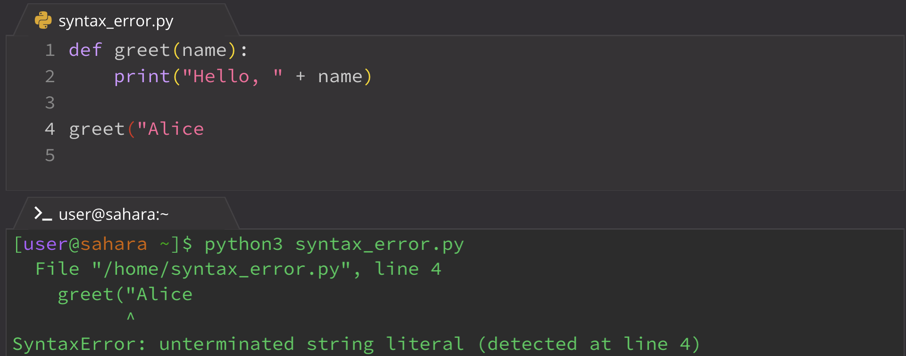
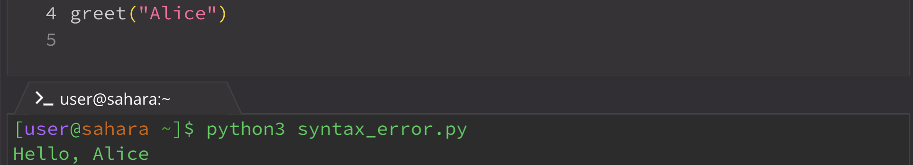
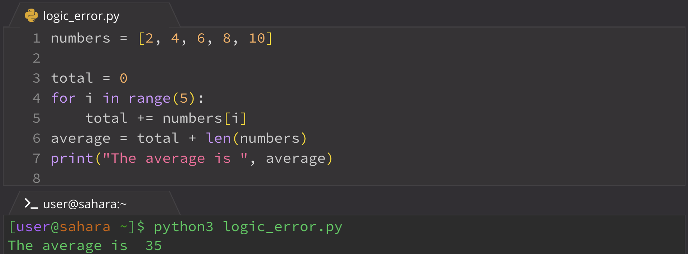
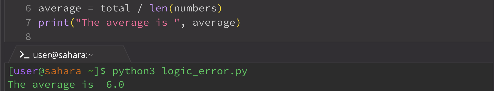
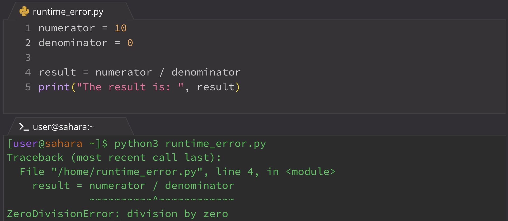
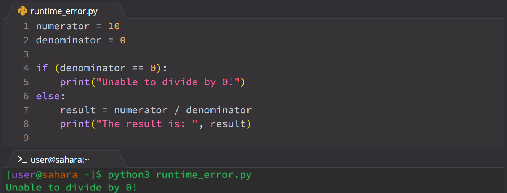

Syllabus
Determine typical errors experienced when developing code, including syntax, logic and runtime, and explain their likely causes
Learning Intention and Success Criteria
Learning Intention - Students will:
- Develop the ability to recognise and explain common errors encountered during code development, including syntax, logic, and runtime errors, as well as their likely causes.
Success Criteria - Students can:
- Correctly identify and categorise errors as syntax, logic, or runtime.
- Analyse and explain the cause of each type of error.
- Apply knowledge of common error causes to troubleshoot and resolve coding issues.
- Demonstrate improved code quality by avoiding or quickly addressing typical errors during development.
Content
Developing software involves a range of challenges and errors are common throughout the process. These errors can broadly be classified into three main types:
- Syntax Errors
- Logic Errors
- Runtime Errors
Understanding and identifying syntax, logic, and runtime errors are essential skills for any programmer. By learning about these errors and their causes, you'll be better equipped to debug and improve your code.
Syntax Errors
- Syntax errors occur when your code violates the rules of the programming language. In other words, you've made a mistake in the way you've written the code.
- Common syntax errors include missing or extra punctuation (such as brackets, commas, or quotes), incorrect indentation, or using an incorrect keyword. All syntax errors will be detected as the source code is translated into machine code.
- The translator, normally an interpreter or a compiler, is unable to understand code that contains one or more syntax errors.
- To fix syntax errors, carefully review your code and ensure you're following the programming language's strict rules.
Take a look at the code snippet below:

In this example, there is a syntax error due to a missing closing quotation mark and parenthesis ") on line 4. The correct line should be:

Syntax errors occur when the code doesn't follow the language's grammar rules. In this case, the string "Alice" should be enclosed in quotation marks, and the function call should end with a closing parenthesis. The Python interpreter cannot execute the code due to this error and will raise a SyntaxError.
Logic Errors
- Logic errors occur when your code runs without syntax errors, but it doesn't produce the expected output or behaviour. This usually happens because the code's logic is flawed, even though it's written correctly in terms of syntax.
- Common logic errors include incorrect calculations, using the wrong variable, off-by-one errors (e.g., loops that run one too many or too few times), and incorrect conditional statements.
- Logic errors can be more challenging to find and fix, as the program will still run, but the results will be incorrect. To fix logic errors, review your code's logic and consider using debugging tools, print statements, or test cases to help identify the issue.
Take a look at the code snippet below:

In this example, there is a logic error on line 6, where the average calculation adds the total sum of the numbers with the length of the numbers list instead of dividing them. The average of [2, 4, 6, 8, 10] is not 35, it should be 6.
The correct line should be:

Logic errors occur when the code runs without any syntax or runtime errors, but the output is not what was intended. In this case, the program incorrectly calculates the average of a list of numbers. The error is in the program's logic, as the calculation does not match the intended output.
Runtime Errors
- Runtime errors occur when your program encounters a serious problem while it's running, causing it to crash or terminate unexpectedly.
- Common runtime errors include dividing by zero, accessing an out-of-bounds index in an array, or attempting to use a null or uninitialised object or variable.
- These errors often stem from incorrect assumptions about the input data, unexpected situations, or misuse of resources.
- To fix runtime errors, add error handling to your code (e.g., using if-statements or try-except blocks in Python) to manage exceptions gracefully, and validate input data to ensure it meets your program's requirements.
Take a look at the code snippet below:

In this example, there is a runtime error due to dividing by zero on line 4.
We can handle this gracefully without the program crashing by preventing the division from occurring if the denominator is 0 (and giving the user an appropriate error message):

Runtime errors occur when the code has correct syntax but encounters a problem during execution. In this case, the program attempts to divide by zero, which is an illegal operation in mathematics. Python raises a ZeroDivisionError when encountering this issue. To fix the runtime error, you should ensure that the denominator is never equal to zero before performing the division. If the denominator is zero, then we must handle the error gracefully to stop the program from crashing.
Sources
- Davis, S. (2024). Software engineering: The year 11 course (S. Davis, Ed.). Parramatta Education Centre.
Activity